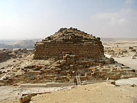

Піраміда Хеопса (Хуфу) — найбільша з-поміж єгипетських пірамід, єдине з «Семи чудес світу», яке збереглося до наших днів. Входить до трійки найвідоміших пірамід на плато Гіза — Хеопса, Хефрена і Мікерина.
Піраміда розташована на західному березі Нілу, в некрополі міста Гіза і є комплексом стародавніх пам'ятників, які в часи єгипетських фараонів були частиною стародавнього міста Мемфіс (сьогодні частина Великого Каїру). За монументальністю і обробкою вона перевершує всі інші піраміди на території Єгипту.
Більшість єгиптологів вважають, що піраміда була побудована близько 2560 року до н. е. і є гробницею єгипетського фараона IV династії Хуфу (Хеопса). Проте не вдалося знайти жодного напису відносно дати створення цієї грандіозної споруди, тому існують й інші теорії щодо датування і призначення Великої піраміди. Радіовуглецевий метод вказує на період спорудження від 2840 до 2680 рр. до н. е.
Назва піраміди давньоєгипетською мовою «Achet-Chufu» — «Обрій Хуну».
За геометрією споруда є чотиригранною рівносторонньою пірамідою. Грані піраміди чітко зорієнтовані на чотири сторони світу з точністю до 3 хвилин. Піраміда, складена з 2,3 млн кам'яних блоків загальною вагою близько 7 млн тонн, висотою 146,6 м (що дорівнює висоті п'ятдесяти-поверхового хмарочоса) і довжиною основи у 233 м. Спочатку піраміда мала довжину сторони квадратної основи 233 м, площу його 54 289 м2 і висоту 146,6 м. Тепер в результаті зняття облицювальних плит (давно поцуплених для повторного використання) і верхньої частини внутрішньої кладки вершини піраміди, а відчасти і внаслідок підйому рівня піску, ці величини складають 227,5 м, 51 756 м2 і 137 м, довжина похилих граней — 173 м, а об'єм піраміди — 2,6 млн м3.[2]
На горі лежав цілісний шматок граніту — пірамідіон. Ймовірно, він впав під час землетрусу. До 13 століття (коли був збудований Лінкольнський кафедральний собор) це була найвища будівля на Землі. За рахунок наступу пустельного піску і вітрової ерозії піраміда стала нижчою майже на 10 м. Зараз на її верхівці є майданчик, який у роки Другої світової війни британський експедиційний корпус використовував як пост протиповітряної оборони. Цей майданчик є квадратом з вапнякових блоків площею 10 м². Кожен блок важить в середньому 2,5 тони, ширина найбільших — 0,90 м, середня висота — 0,68 м, але були блоки заввишки до 1,5 м. Ними викладено верхню частину піраміди.
Сам процес проектування і будівництва такої грандіозної споруди вимагав від давньоєгипетських інженерів неабияких знань і досвіду. До планування і будівництва були залучені найкращі архітектори, і каменярі Стародавнього Єгипту.
Піраміда стоїть на спеціально вирівняній скельній площині, яка по горизонталі дає відхилення менше двох сантиметрів. Ця площина зроблена з природного скельного виходу еоценових вапняків, висота якого в центрі близько 9 м. Основа піраміди квадратна з довжиною однієї сторони 230 метрів Початкова площа основи була близько 53 тисяч м².
Для будівництва було використано близько 2,3 мільйони блоків середньоеоценового нумулітового глинястого вапняку, укладених в 210 ярусів (нині 203). Середня вага одного блоку становить 2,5 тони. Найважчий — 7,5 тон. Загальна вага піраміди — 5,7 мільйонів тон.
Облицювання піраміди із полірованого декоративного білого вапняку не збереглось, так само як і вкрита листовим золотом вершина споруди.
У 1168 візир Шавур наказав спалити Каїр, щоб він не дістався хрестоносцям. Каїрці вимушені були зняти облицювальні камені з піраміди, для того щоб збудувати нові будинки.
Архітектором піраміди вважається Хеміун, візир і племінник Хеопса. Він також носив титул «Керівник всіма будівництвами фараона».
| 1. Головний вхід 2. Тунель Аль-Мамуна 3. Перехрестя і гранітні заглушки 4. Низхідний коридор 5. Незакінчена підземна камера 6. Висхідний коридор | 7. Камера цариці з витікаючими «повітряводами» 8. Горизонтальний тунель 9. Велика галерея 10. Камера фараона 11. Передкамера 12. Вертикальна шахта з посередині |
Вхід в піраміду знаходиться на висоті 15,63 м на північній стороні на рівні 13-го ярусу. Його утворюють кам'яні плити, укладені у вигляді арки. Він був закладений гранітною заглушкою ще в часи античності. Опис цієї заглушки можна знайти у Страбона. Сьогодні туристи потрапляють всередину піраміди через 17-метровий пролом, який зробив в 820 році халіф Абу Джафар аль-Ма'мун. Він сподівався знайти там незчисленні скарби фараона, але виявив там тільки товстий шар білого .
Всередині споруди є три камери, низхідний і висхідний коридори, шахти невідомого призначення і майже вертикальна шахта з гротом посередині.
Нисхідний коридор, довжиною 105 м іде під нахилом 26° 26'46". Він приводить до горизонтального коридору довжиною 8,90 м, який веде до підземної камери.
Найнижча, незавершена камера, врізається в основу піраміди, йдучи під землю на 30 метрів. Розміри камери 14×8,1 м, вона має форму прямокутника, витягнутого зі сходу на захід. Висота стелі камери досягає 3,5 м. Біля південної стіни камери є колодязь, глибиною близько 3 м, від якого в південному напрямку на 16 м тягнеться вузький прохід (0,7×0,7 м в поперечнику), якій закінчується тупиком. Призначення цього ходу невідоме. Американські інженери Джон Піррінг і Говард Вайз на початку XIX ст. розібрали підлогу в камері і викопали колодязь глибиною 11,6 м, в якому вони сподівались знайти заховану потаємну похоронну залу зі скарбами фараона. На превеликий жаль для дослідників, вони нічого не знайшли.
Щодо призначення підземної камери, то єгиптологи вважають, що спочатку вона будувалась як похоронна камера для фараона 4-ї династії Хуфу. Проте, за нез'ясованих обставин, Хеміун вирішив збудувати в піраміді іншу усипальницю, розташовану вище.
Від нижньої частини Великої галереї починається вузька, майже вертикальна шахта висотою близько 60 м, яка веде до нижньої частини низхідного коридору. Приблизно посередині її знаходиться невеличкий, скоріш за все, природний грот неправильної форми, в якому могли б розміститись максимум декілька людей. Грот (12) розташований на «стику» кам'яної кладки піраміди і невеликого горба на вапняковому плато, яке лежить в основі Великої Піраміди. Стіни гроту частково украплені стародавньою кам'яною кладкою.
Існує гіпотеза, що шахта була призначена для евакуації робітників, або жерців, які завершували церемонію «запечатування» основного проходу до «Камери фараона». Оскільки окремі кам'яні блоки в кладці гроту занадто великі, деякі дослідники висловлюють припущення, що грот існував на плато Гіза як окрема самостійна споруда ще задовго до будівництва піраміди, а відповідно, евакуаційна шахта будувалась з урахуванням місцезнаходження гроту. Однак, через те, що шахта саме проходилась в уже сформованій кладці, а не викладалась, про що свідчить її неправильний округлий перетин, постає питання: як будівельникам вдалось так точно вийти на грот?
Центральна камера відома як «камера цариці» (її так помилково назвали араби). Ця майже квадратна, найменша за розмірами камера (5,73 м з сходу на захід і 5,23 м з півночі на південь) розташована саме по центру, між північною і південною сторонами піраміди. Максимальна висота стелі в камері — 6,22 м. У східній стіні камери є висока ніша. В камері не завершена підлога, і цей факт свідчить про те, що через невідомі причини, будівництво в цьому приміщенні було перервано.
Іншою важливою частиною внутрішнього планування Великої піраміди є Велика галерея. Вона була збудована як продовження висхідного коридору. Ця архітектурна споруда з мистецьки виконаним східчастим склепінням із рядів виїмок у відполірованих вапнякових стінах.
В серці піраміди розташована «камера фараона», повністю виконана з монолітних полірованих блоків рожевого асуанського граніту. Біля західної стіни похоронної камери знаходиться царський саркофаг, в якому колись могло лежати тіло Хуфу, хоча цьому немає доказів, як і тому, що тут колись було поховання. Саркофаг висічений із цільного шматка червоного асуанського граніту. Він на 2,5 см вище за вхід до камери царя, отже, спочатку був встановлений саркофаг, а вже потім облаштовували поховальну камеру.
Найбільшою загадкою та унікальною особливістю піраміди є її шахти. Дві з них, виходячи з камер царя і цариці, піднімаються під нахилом на поверхню. Припускають, що це були вентиляційні канали, хоча сучасні дослідники впевнені, що ці вузькі проходи могли мати і релігійне значення, оскільки вдалось довести, що шахти будувались з врахуванням розташування астрономічних тіл. Вірогідно, це було пов'язане з віруванням єгиптян про богів і душі мертвих, що мешкають на зірковому небі.
У 2017 році за допомогою вимірювання потоків мюонів, що є глибоко проникаючою компонентою космічних променів, вченим вдалося ідентифікувати у піраміді велику порожнину об'ємом близько 600 кубічних метрів, раніше невідому,. Поки що не зрозуміло призначення цієї порожнини: можливо там є якісь археологічні об'єкти, а можливо, вона була технічно необхідною для спорудження піраміди. Це важливе відкриття було зроблене спільними зусиллями істориків, археологів і фізиків.
Оскільки серед написів на стінах всередині піраміди відсутні офіційні тексти, багато сучасних дослідників ставлять під сумнів загальноприйняту версію, що це була дійсно гробниця для фараона Хуфу. У Великій піраміді вбачають астрономічну обсерваторію, мегалітичну культову споруду, космодром інопланетних прибульців, стародавню енергетичну установку, Храм посвячення або спадок надраси, яка прибула з Атлантиди, інформаційне «послання» людству від попередньої цивілізації, що мала місце на Землі.

Однією з найбільших загадок Великої піраміди є питання про проектування і будівництво настільки грандіозної споруди. Яким чином великі кам'яні блоки доставлялись на місце будівництва, піднімались і так акуратно вкладались один на одний?
Дещо про методи будівництва пірамід у Стародавньому Єгипті розповіли рельєфні малюнки на гробниці чиновника Ті із Саккари часів IV династії (2489—2345 роки до н. е.). На ній зображена група робітників, які для установки великих обелісків і статуй використовують мотузки і спеціальні сани.
На думку німецького єгиптолога Ганса Райхардта початок будівництва виглядав так: спочатку розплановували основу під будівництво. Вона мусила бути ідеально рівна, позаяк перекоси фундаменту позначилися б на кладці. Для цього навколо скельного виходу побудували водонепроникний вал з кам'яної кладки. У квадраті, що утворився, вирубали густу мережу невеличких каналів, що перетинаються під прямим кутом, і будмайданчик став схожим на величезну шахівницю. Канали заповнили водою, висоту рівня води точно позначили рисками на бічних стінках, потім воду спустили. Каменотеси вирубали усе, що виступало над гладдю води, і канали знову заклали каменем.
Для підйому і установки каменів, за думкою єгиптологів, на похилих площинах будувались рампи із уламків вапняків, блоків і валунів. Єгиптолог Марк Лехнер висунув гіпотезу, що для цих цілей використовувалася спіральна рампа. Вона розпочиналась в кам'яному кар'єрі, розташованому поруч, на південний схід від піраміди. По ній блоки затягували на спеціальних дерев'яних санях на потрібну висоту. Залишки таких рамп були виявлені біля різних інших, але менших пірамід. Проте для будівництва настільки великої піраміди необхідна була рампа дуже великих розмірів і її створення було не менш складною інженерною задачею, аніж будівництво самої піраміди.
Румен В. Младов, Ян С. Р. Младов і професор інженерного будівництва Кембріджського університету Дік Перрі висунули іншу гіпотезу. В її основу лягли написи, висічені на великих блоках, що використовувались при будівництві піраміди. На них вказувалось: «Цим боком догори». Дослідники припускають, що ця інструкція не мала б сенсу, якби прямокутні блоки просто тягнули по рампах. Запропонована ними інженерна теорія зводилась до того, що камені в буквальному смислі закочувались по рампах на піраміду за допомогою спеціально для цього створених дерев'яних пристроїв, що нагадували цільнокатане колесо. Доказом існування прототипу коліс у єгиптян є модель дерев'яного котка із пари товстих дощок з опуклим нижнім краєм, скріплених між собою круглими дерев'яними рейками. Подібна модель була знайдена британським археологом Фліндерсом Пітрі в місті Дейр ель-Бахрі. Єдиним недоліком цієї гіпотези є те, що напівкруглі пристрої могли бути корисні лише при транспортуванні каменів невеликих розмірів, що не скажеш про 2,5 т блоки для Великої піраміди.
Існує цікава гіпотеза про те, що у складі споруди Піраміди Хеопса був вибудований стародавній аналог сучасного ліфта, який складався з шахти ліфта, верхня частина якої сьогодні доступна у вигляді гранітних стін і стелі Камери фараона, і такої собі опущеної донизу кабіни ліфта, верхню частину якої можна побачити у вигляді сучасної підлоги камери фараона.
У 2004 французький архітектор Жан П'єр Уден висунув теорію, що велика галерея служила шляхом для перевезення блоків у камеру фараона, у якій починався внутрішній спіральний пандус, по якому блоки витягувалися нагору. Його теорію опублікували у 2008 році у фільмі «Розгадка таємниці піраміди Хеопса».
До сьогодні вважалось, що піраміду будували 20 років. Однак, після перегляду записів давньоєгипетських жерців, у яких зазначалось, що Хуфу правив 50 років, його син Хафра 56, а правнук Хуфу — Мікерин 63 роки, можна припустити, що піраміда будувалася 40 років. Найімовірніше, що піраміду будували 32 роки, що цілком виправдовує її розміри, та зовсім невелику заселеність Єгипту на той час.
Згідно з канонами давньоєгипетської релігії, смерть є лише тонкою межею, яка відділяє одне життя (земне) від іншого (загробного). Останній шлях фараона до усипальниці-піраміди повторював рух Сонця по небосхилу — зі сходу на захід. Тому багато прикрашений поховальний човен з різьбленим високим носом, який був ніби дзеркальним відбиття священного човна Ра, перетинав Ніл зі східного берегу до західного.
У святковій тиші човен із тілом фараона, повільно причалював до спеціально підготовленої пристані на західному березі Нілу, де опускався якір. З пристані святкова процесія, яку очолювали найвищі жерці Єгипту, переносила тіло фараона до нижнього храму, який був брамою на довгому шляху фараона до загробного, нового життя. Саме з цією поховальною церемонією дослідники пов'язують утворення вірувань у середземноморських народів про підземну річку Стікс і перевізника Харона, який за невелику платню перевозить душі тих, що померли, на той бік.
|  | ||